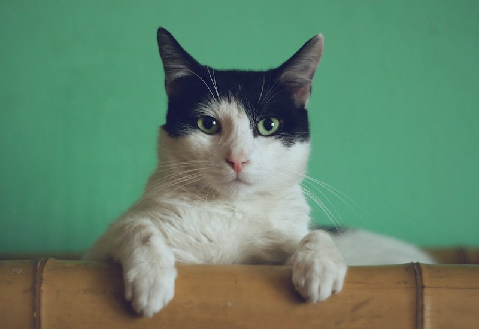
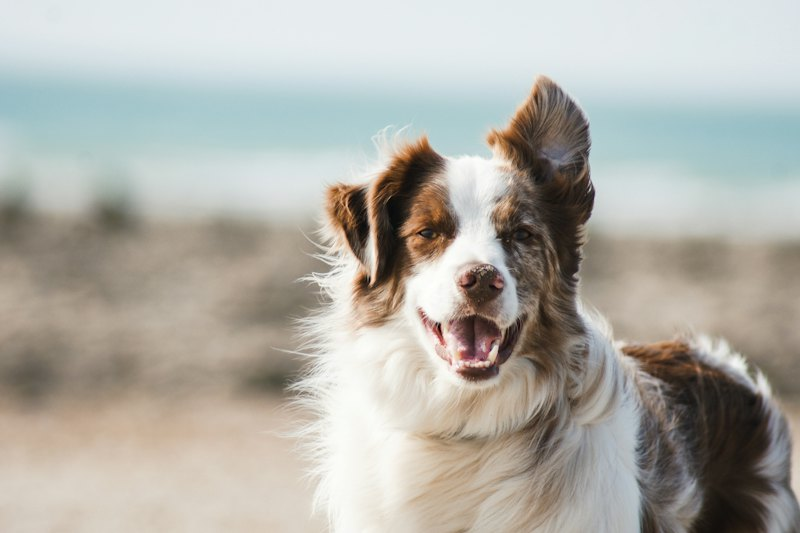
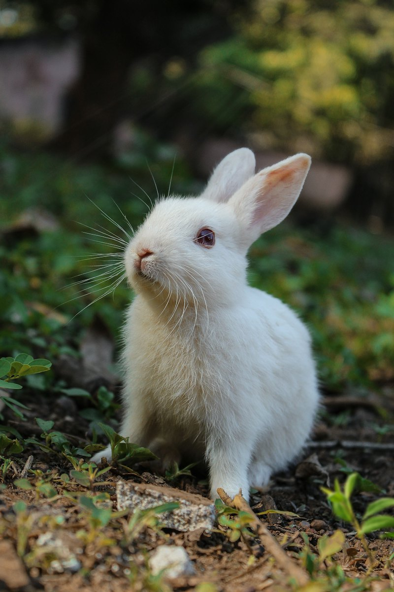

Lesson 01 · Exercise 09
Each blue box is a parent. The cat, the dog, and the rabbit are the children. You move the children by writing on the parent.
justify-content moves animals along the main axis. In a row, that is left and right.
align-items moves animals along the cross axis. In a row, that is up and down. flex-direction: column swaps the axes. The main axis runs down the page, and the cross axis runs across it.
The animals stack because the parent is an ordinary block. Flex belongs on this blue box.



Keep them in a row, and gather the group in the horizontal center. Empty blue space stays on both sides.
The cat meets the left edge. The rabbit meets the right edge. The dog stays in the middle.
The blue box is taller than the cards. A row normally starts at the top. Move the cards to the vertical middle.
Stack the animals. The main axis now runs from top to bottom, so a later change to justify-content would move them up and down.
Compare this with the space-between box above. The end gaps should match the gaps between the animals.